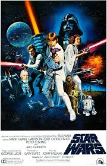

Luke Skywalker
 We don’t serve their kind here! What? Your droids. They’ll have to wait outside. We don’t want them here. Listen, why don’t you wait out by the speeder. We don’t want any trouble. I heartily agree with you sir. Negola dewaghi wooldugger?!? He doesn’t like you. I’m sorry. I don’t like you either You just watch yourself. We’re wanted men. I have the death sentence in twelve systems. I’ll be careful than. You’ll be dead. This little one isn’t worth the effort. Come let me buy you something…
The approach will not be easy. You are required to maneuver straight down this trench and skim the surface to this point. The target area is only two meters wide. It’s a small thermal exhaust port, right below the main port. The shaft leads directly to the reactor system. A precise hit will start a chain reaction which should destroy the station. Only a precise hit will set up a chain reaction. The shaft is ray-shielded, so you’ll have to use proton torpedoes. That’s impossible, even for a computer. It’s not impossible. I used to bull’s-eye womp rats in my T-sixteen back home. They’re not much bigger than two meters. Man your ships! And may the Force be with you!
Luke? Luke? Luke? Have you seen Luke this morning? He said he had some things to do before he started today, so he left early. Uh? Did he take those two new droids with him? I think so. Well, he’d better have those units in the south range repaired be midday or there’ll be hell to pay! Wait, there’s something dead ahead on the scanner. It looks like our droid…hit the accelerator.